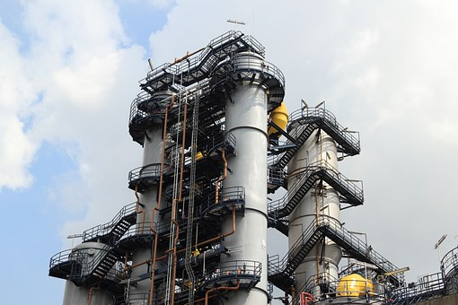
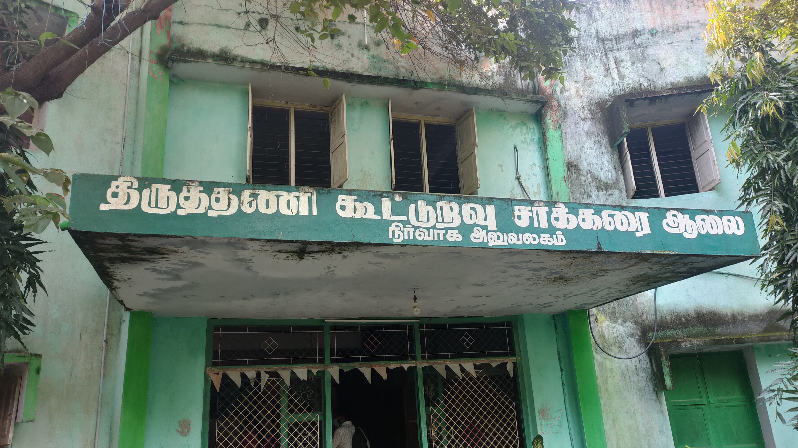

Manali Petrochemicals Ltd.
-
Manali Petrochemicals Limited is a leading manufacturer of petrochemical products based in Chennai, India. With state-of-the-art manufacturing facilities and a strong focus on innovation, the company produces high-quality polypropylene, propylene oxide, and specialty chemicals for domestic and international markets. Committed to sustainability and corporate social responsibility, Manali Petrochemicals continues to drive growth and make a positive impact on the industry and communities it serves.
(Click Here) Time Frame : 7 Days.

{kind=link}
IICHE Online Internship.
- The IIChE (Indian Institute of Chemical Engineers) online internship in Petro Refinery Engineering provides students with a comprehensive understanding of the processes, technologies, and operations involved in petroleum refining. Participants gain hands-on experience through virtual simulations, case studies, and industry projects, covering various aspects such as crude oil processing, refining techniques, product separation, refining economics, and environmental considerations. Led by experienced professionals and industry experts, this internship equips students with practical skills and knowledge essential for a career in the petrochemical and refining industry. (Click Here) Time Frame : 40 Hours.
{kind=link}
Tiruttani Co Operative Sugar Mills Ltd..
-
The Tiruttani Co-operative Sugar Mills Ltd. is a sugar manufacturing company located in Tiruttani, Tamil Nadu, India. Established as a co-operative venture, the mill is dedicated to processing sugarcane into sugar, with a focus on quality, efficiency, and sustainability. The company plays a significant role in supporting the local agricultural community by providing a market for sugarcane growers and generating employment opportunities in the region. With modern manufacturing facilities and a commitment to ethical practices, the Tiruttani Co-operative Sugar Mills Ltd. contributes to the growth of the sugar industry and the socio-economic development of the surrounding areas.
(Click Here)Time Frame : 14 Days.


{kind=link}
-
Kothari Petrochemicals Limited, headquartered in Chennai, India, is a leading manufacturer of petrochemical products established in 1989. Specializing in polyethylene, polypropylene, and specialty chemicals, the company is known for its advanced manufacturing facilities and commitment to quality, innovation, and sustainability. Serving industries such as packaging, textiles, automotive, and consumer goods, Kothari Petrochemicals is a trusted partner with a strong focus on corporate social responsibility.
(Click Here)Time Frame : 2 Months.

{kind=link}